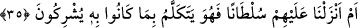

olmaktır.
et-Te’vîlâtü’n-Necmiyye’de der ki: “Âyet insan tabîatına işâret etmektedir ki o ruhun
hidâyeti ve itâati ile nefsin dâlâleti, ısyânı ve azgınlığının karışımından meydana
gelmiştir. İnsanlar sıkıntının karanlığına düştüğü, kendilerine fitne ulaştığı ve belâ
dokunduğu zaman nefisleri kırılır, nefislerin kışkırtmaları kesilir, ruhları nefislerinin
şehvetlerinin zulmetinin esâretinden kurtulur ve yaratıldıkları tabîata uygun olarak
Hakk’ın huzûruna geri dönerler. Nefisler de ruhlarının muvâfakati ile tabiatlarının
aksine olarak belâyı defetme konusunda mecbur olarak, Allâh’ın lütfundan yardım
isteyerek, kendilerine musîbet vermesinden O’na sığınarak ve kendilerinden sıkıntıyı
gidermesini isteyerek Allâh’a döner. İşte kendilerine gelen sıkıntıyı gidererek ikramda
bulunduğu ve başlarına gelen musîbet konusunda onlara lütuf ile nazar ettiği zaman
“bakarsınız ki onlardan bir gurup” -ki onlar azgın nefislerdir- hemen yerilen
alışkanlıklarına, aşağılık tabiatlarına ve nîmetlere nankörlük etmeye dönerler.
“Kendilerine verdiklerimize” onlara verdiğimiz nîmet ve rahmete “nankörlük etsinler
bakalım!” Sonra Allah onları şu sözüyle tehdid etti: “Haydi safâ sürün; ama yakında”
tabiatınıza uygun olarak ve hevâlarınıza uyarak yapmakta olduklarınızın cezâsını
“bileceksiniz!”
35. Yoksa onlara kesin bir delil indirdik de, o delil, müşrik olmalarını mı söylüyor?
“Yoksa onlara kesin bir delil” yâni kitap gibi apaçık bir delil “indirdik de, o delil,
müşrik olmalarını mı” yâni onların Allâh’a ortak koşmalarını ve bunun doğru olduğunu
mu veya ulûhiyyette O’na ortak koşmalarına sebep olan bir emri mi “söylüyor?”
Burada kitabın söylemesi/konuşması, “Bu bizim kitabımız, karşınızda gerçeği
söyler” (el-Câsiye, 45/29) âyetinde olduğu gibi delâlet yoluyla konuşmadır.
Âyetteki sorudan maksad red ve inkârdır. Yâni biz onlara öyle birşey indirmedik,
demektir.
Burada işâret vardır ki kulların amelleri Allah tarafından indirilen bir delile
dayanırsa onlar lehine bir delil olur. Eğer kendi habis nefislerinin tabîatlarının
neticelerinden olursa aleyhlerine bir delil olur. Tabîat ile yapılan amel hevâdır. Delil
ile yapılan hidâyettir. Sâlih olanlarıyla ve fâsid olanlarıyla kulların bütün fiilleri buna
dâhildir. Gerçi insanlar bunu hissetmezler ve amellerinin iyi olanlarını kendilerine
söyleyen güçlü bir delil olmaksızın bazı çirkin amellerini güzel zannederler. Bâtıla
dalmaktan ve onun faydası olan bir iş olduğuna inanmaktan Allâh’a sığınırız.
Ey Bedevî, korkarım ki Kâbe’ye ulaşamazsın,
Çünkü senin tuttuğun yol Türkistan’a gidiyor.